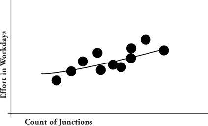

Reduced quality
Reduced qualityAn Important Productivity-Reduction Technique
Extended overtime is a productivity-reduction technique. It reduces the effect of each hour worked. We can quantify the productivity reduction, at least broadly, by looking at certain kinds of knowledge work where there are widely accepted metrics of work accomplished.
In fields such as circuit design, architectural design, and software development, predictive metrics are widely used to project future effort based on early available indicators. So, for example, the total effort to test and prove new circuits may be correlated to the number of junctions in the circuits as follows:

Now, to forecast what will be required to prove out a new circuit, count the number of junctions in the circuit and let the trend line indicate expected effort.
The people who design such metric relationships take particular pains to define their formulas and procedures so as to narrow the scatter of data points around the prediction line. (Obviously, the graph shown above would be less useful if the points were more widely scattered away from the line.) Any refinement of approach that narrows scatter is an improvement. One “improvement” you might think to suggest is to correlate the values of any metric to work hours rather than workdays, since workdays on some projects are much longer (due to overtime) than those on other projects. But surprisingly, when the researchers try out this “improvement,” scatter is not reduced, it is increased. The result is that in all three of these fields, overtime is explicitly ignored in projecting effort required to perform new work. Stop and think about what that means. Some projects are working days that are 50 percent longer than others, but taking account of the variant workday does not materially reduce scatter. The only explanation is that those longer days do not accomplish more than the shorter ones. The best predictor of how much work a knowledge worker will accomplish is not the hours that he or she spends, but the days. The twelve-hour days don’t accomplish any more than the eight-hour days. Overtime is a wash.
Since companies don’t typically pay knowledge workers for overtime, any net advantage gained by extraction of overtime would be a cost-free benefit. That violates the ages-old adage that there ain’t no such thing as a free lunch. And sure enough, there ain’t.
There are four reasons why overtime hurts enough to offset the effect of the added hours. These are the invariable side effects of extended overtime: